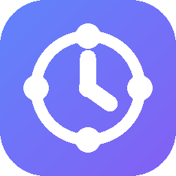

Вход по QR за пару секунд
Открой приложение Steam на телефоне, наведи камеру на код — и готово. Пароль вводить не нужно, он нигде не сохраняется.
Neural Hours — локальный клиент для Steam, который ведёт сессию в фоне. Библиотека под рукой, вход по QR или Steam Guard, работа из трея. Никакой установки, аккаунтов и телеметрии.
Шесть вещей, из которых состоит Neural Hours. Каждая сделана так, чтобы ты открыл приложение один раз — и забыл про него.
Открой приложение Steam на телефоне, наведи камеру на код — и готово. Пароль вводить не нужно, он нигде не сохраняется.
Код из письма или мобильного приложения вводится прямо в окне. Сессия переживает перезапуск.
Закрыл окно — процесс работает. ПК не уйдёт в сон, пока идёт сессия, а при старте Windows всё поднимется само.
Тёмная, светлая и Aurora. Переключение — плавный кросс-фейд в линейном пространстве, без грязного серого посередине.
Внутри — весь Node.js-воркер. Никаких установщиков, зависимостей и папок рядом с программой.
Конфиг лежит в %APPDATA%\Neural Hours. Ни телеметрии,
ни аналитики, ни облачных аккаунтов.
Один файл, 40 мегабайт. Распаковывать нечего, ярлыки создавать не нужно — просто открой его.
QR-код, пароль или Steam Guard. Токен сессии остаётся на твоём компьютере и никуда не уходит.
Выбери, что должно идти в фоне. Сверни окно в трей — часы продолжат капать без тебя.
Переключи тему — и посмотри, как интерфейс меняется прямо здесь. В приложении это такой же плавный переход, а не резкая перерисовка.
Dark — спокойный графит с синим акцентом. Режим по умолчанию: не бьёт по глазам ни днём, ни ночью.
Мы проверили сборку на утечки: ни имени пользователя, ни путей, ни токенов, ни имени аккаунта. Всё, что приложение знает о тебе, появляется только после того, как ты сам войдёшь в Steam.
%APPDATA%99cd914f6824c707da483f36e62710a863511824ea18bac5a73c90ddb09d7205
Сверь хеш после скачивания командой
Get-FileHash "Neural Hours.exe"

Один файл. Без установки. Windows 10 и 11, x64.
Скачать 40.6 МБФайл не подписан сертификатом, поэтому SmartScreen может показать предупреждение: «Подробнее» → «Выполнить в любом случае».
Приложение работает через официальный протокол Steam и не меняет данные аккаунта — только держит сессию. Пароль не сохраняется: после входа остаётся токен, который можно удалить вместе с папкой конфига.
При этом любой сторонний клиент — это всегда риск. Если переживаешь за основной аккаунт, попробуй сначала на втором.
Нет. Neural Hours общается с серверами Steam напрямую и работает независимо от того, установлен ли клиент.
В %APPDATA%\Neural Hours\config.ini — токен сессии, имя
аккаунта и настройки. Временные файлы воркера живут в
%LOCALAPPDATA%\Neural Hours\runtime.
Удалить эти две папки — значит удалить всё, что приложение о тебе знает.
Бинарник не подписан платным сертификатом Code Signing, поэтому SmartScreen помечает его как неизвестный. Нажми «Подробнее» → «Выполнить в любом случае». Хеш файла можно сверить с указанным выше.
Нет. Приложение держит single-instance mutex, чтобы две копии не конфликтовали за одну сессию. Второй запуск просто развернёт уже открытое окно.
Приложение распаковывает встроенный Node.js-воркер во временную папку при первом запуске — эвристики иногда реагируют на такое поведение. Это не вирус: весь код воркера лежит внутри exe открыто, а сетевые соединения идут только к серверам Steam.